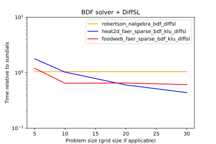

Specifying the problem
Most of the DiffSol user-facing API revolves around specifying the problem you want to solve, thus a large part of this book will be dedicated to explaining how to specify a problem.
ODE equations
The class of ODE equations that DiffSol can solve are of the form
\[M(t) \frac{dy}{dt} = f(t, y, p),\] \[y(t_0) = y_0(t_0, p),\] \[z(t) = g(t, y, p),\]
where:
- \(f(t, y, p)\) is the right-hand side of the ODE,
- \(y\) is the state vector,
- \(p\) are the parameters,
- \(t\) is the time.
- \(y_0(t_0, p)\) is the initial state vector at time \(t_0\).
- \(M(t)\) is the mass matrix (this is optional, and is implicitly the identity matrix if not specified),
- \(g(t, y, p)\) is an output function that can be used to calculate additional outputs from the state vector (this is optional, and is implicitly \(g(t, y, p) = y\) if not specified).
The user can also optionally specify a root function \(r(t, y, p)\) that can be used to find the time at which a root occurs.
DiffSol problem APIs
DiffSol has three main APIs for specifying problems:
- The
OdeBuilderstruct, where the user can specify the functions above using Rust closures. This is the easiest API to use from Rust, and is the recommended API for most users. - The
OdeEquationstrait where the user can implement the functions above on their own structs. This API is more flexible than theOdeBuilderAPI, but is more complex to use. It is useful if you have custom data structures and code that you want to use to evaluate your functions that does not fit within theOdeBuilderAPI. - The
DiffSlContextstruct, where the user can specify the functions above using the DiffSl Domain Specific Language (DSL). This API requires a local LLVM installation, and is behind a feature flag, but has the best API if you want to use DiffSL from a higher-level language like Python or R while still having the performance of Rust.
ODE equations
The simplest way to create a new ode problem in Rust is to use the OdeBuilder struct.
You can set the initial time, initial step size, relative tolerance, absolute tolerance, and parameters, or leave them at their default values.
Then, call one of the build_* functions to create a new problem, for example the build_ode
function can be used to create an ODE problem of the form \(dy/dt = f(t, y, p)\), where \(y\) is the state vector, \(t\) is the time, and \(p\) are the parameters.
Below is an example of how to create a new ODE problem using the OdeBuilder struct.
The specific problem we will solve is the logistic equation
\[\frac{dy}{dt} = r y (1 - y/K),\]
where \(r\) is the growth rate and \(K\) is the carrying capacity. To specify the problem, we need to provide the \(dy/dt\) function \(f(y, p, t)\), and the jacobian of \(f\) multiplied by a vector \(v\) function, which we will call \(f'(y, p, t, v)\). That is
\[f(y, p, t) = r y (1 - y/K),\] \[f'(y, p, t, v) = rv (1 - 2y/K),\]
and the initial state
\[y_0(p, t) = 0.1\]
This can be done using the following code:
fn main() { use diffsol::OdeBuilder; use nalgebra::DVector; type M = nalgebra::DMatrix<f64>; let problem = OdeBuilder::new() .t0(0.0) .rtol(1e-6) .atol([1e-6]) .p(vec![1.0, 10.0]) .build_ode::<M, _, _, _>( |x, p, _t, y| y[0] = p[0] * x[0] * (1.0 - x[0] / p[1]), |x, p, _t, v , y| y[0] = p[0] * v[0] * (1.0 - 2.0 * x[0] / p[1]), |_p, _t| DVector::from_element(1, 0.1), ).unwrap(); }
Each build_* method requires the user to specify what matrix type they wish to use to define and solve the model (the other types are inferred from the closure types).
Here we use the nalgebra::DMatrix<f64> type, which is a dense matrix type from the nalgebra crate. Other options are:
faer::Mat<T>from faer, which is a dense matrix type.diffsol::SparseColMat<T>, which is a thin wrapper aroundfaer::sparse::SparseColMat<T>, a sparse compressed sparse column matrix type.
Each of these matrix types have an associated vector type that is used to represent the vectors in the problem (i.e. the state vector \(y\), the parameter vector \(p\), and the gradient vector \(v\)).
You can see in the example above that the DVector type is explicitly used to create the initial state vector in the third closure.
For these matrix types the associated vector type is:
nalgebra::DVector<T>fornalgebra::DMatrix<T>.faer::Col<T>forfaer::Mat<T>.faer::Coll<T>fordiffsol::SparseColMat<T>.
The arguments to the build_ode method are the equations that define the problem.
The first closure is the function \(f(y, p, t)\) this is implemented as a closure that takes the time t,
the parameter vector p, the state vector y, and a mutable reference that the closure can use to place the result (i.e. the derivative of the state vector \(f(y, p, t)\)).
The second closure is similar in structure in defines the jacobian multiplied by a vector \(v\) function \(f'(y, p, t, v)\).
The third closure returns the initial state vector \(y_0(p, t)\), this is done so that diffsol can infer the size of the state vector.
Mass matrix
In some cases, it is necessary to include a mass matrix in the problem, such that the problem is of the form
\[M(t) \frac{dy}{dt} = f(t, y, p).\]
A mass matrix is useful for PDE discretisation that lead to a non-identity mass matrix, or for DAE problems that can be transformed into ODEs with a singular mass matrix. Diffsol can handle singular and non-singular mass matrices, and the mass matrix can be time-dependent.
Example
To illustrate the addition of a mass matrix to a problem, we will once again take the logistic equation, but this time we will add an additional variable that is set via an algebraic equation. This system is written as
\[\frac{dy}{dt} = r y (1 - y/K),\] \[0 = y - z,\]
where \(z\) is the additional variable with a solution \(z = y\). When this system is put in the form \(M(t) \frac{dy}{dt} = f(t, y, p)\), the mass matrix is
\[M(t) = \begin{bmatrix} 1 & 0 \\ 0 & 0 \end{bmatrix}.\]
Like the Jacobian, the DiffSol builder does not require the full mass matrix, instead users can provide a function that gives a GEMV (General Matrix-Vector) product of the mass matrix with a vector.
\[m(\mathbf{v}, \mathbf{p}, t, \beta, \mathbf{y}) = M(p, t) \mathbf{v} + \beta \mathbf{y}. \]
Thus, to specify this problem using DiffSol, we can use the OdeBuilder struct and provide the functions:
\[f(\mathbf{y}, \mathbf{p}, t) = \begin{bmatrix} r y_0 (1 - y_0/K) \\ y_0 - y_1 \end{bmatrix},\] \[f'(\mathbf{y}, \mathbf{p}, t, \mathbf{v}) = \begin{bmatrix} r v_0 (1 - 2 y_0/K) \\ v_0 - v_1 \end{bmatrix},\] \[m(\mathbf{v}, \mathbf{p}, t, \beta, \mathbf{y}) = \begin{bmatrix} v_0 + \beta y_0 \\ \beta y_1 \end{bmatrix}.\]
where \(f\) is the right-hand side of the ODE, \(f'\) is the Jacobian of \(f\) multiplied by a vector, and \(m\) is the mass matrix multiplied by a vector.
fn main() { use diffsol::OdeBuilder; use nalgebra::{DMatrix, DVector}; type M = DMatrix<f64>; type V = DVector<f64>; let problem = OdeBuilder::new() .t0(0.0) .rtol(1e-6) .atol([1e-6]) .p(vec![1.0, 10.0]) .build_ode_with_mass::<M, _, _, _, _>( |x, p, _t, y| { y[0] = p[0] * x[0] * (1.0 - x[0] / p[1]); y[1] = x[0] - x[1]; }, |x, p, _t, v , y| { y[0] = p[0] * v[0] * (1.0 - 2.0 * x[0] / p[1]); y[1] = v[0] - v[1]; }, |v, _p, _t, beta, y| { y[0] = v[0] + beta * y[0]; y[1] *= beta; }, |_p, _t| V::from_element(2, 0.1), ).unwrap(); }
Root finding
Root finding is the process of finding the values of the variables that make a set of equations equal to zero. This is a common problem where you want to stop the solver or perform some action when a certain condition is met.
Specifying the root finding function
Using the logistic example, we can add a root finding function \(r(y, p, t)\) that will stop the solver when the value of \(y\) is such that \(r(y, p, t) = 0\). For this example we'll use the root finding function \(r(y, p, t) = y - 0.5\), which will stop the solver when the value of \(y\) is 0.5.
\[\frac{dy}{dt} = r y (1 - y/K),\] \[r(y, p, t) = y - 0.5,\]
This can be done using the OdeBuilder via the following code:
fn main() { use diffsol::OdeBuilder; use nalgebra::DVector; type M = nalgebra::DMatrix<f64>; let problem = OdeBuilder::new() .t0(0.0) .rtol(1e-6) .atol([1e-6]) .p(vec![1.0, 10.0]) .build_ode_with_root::<M, _, _, _, _>( |x, p, _t, y| y[0] = p[0] * x[0] * (1.0 - x[0] / p[1]), |x, p, _t, v , y| y[0] = p[0] * v[0] * (1.0 - 2.0 * x[0] / p[1]), |_p, _t| DVector::from_element(1, 0.1), |x, _p, _t, y| y[0] = x[0] - 0.5, 1, ).unwrap(); }
here we have added the root finding function \(r(y, p, t) = y - 0.5\), and also let DiffSol know that we have one root function by passing 1 as the last argument to the build_ode_with_root method.
If we had specified more than one root function, the solver would stop when any of the root functions are zero.
Detecting roots during the solve
To detect the root during the solve, we can use the return type on the step method of the solver.
If successful the step method returns an OdeSolverStopReason enum that contains the reason the solver stopped.
fn main() { use diffsol::OdeBuilder; use nalgebra::DVector; type M = nalgebra::DMatrix<f64>; use diffsol::{OdeSolverMethod, OdeSolverStopReason, OdeSolverState, Bdf}; let problem = OdeBuilder::new() .p(vec![1.0, 10.0]) .build_ode_with_root::<M, _, _, _, _>( |x, p, _t, y| y[0] = p[0] * x[0] * (1.0 - x[0] / p[1]), |x, p, _t, v , y| y[0] = p[0] * v[0] * (1.0 - 2.0 * x[0] / p[1]), |_p, _t| DVector::from_element(1, 0.1), |x, _p, _t, y| y[0] = x[0] - 0.5, 1, ).unwrap(); let mut solver = Bdf::default(); let state = OdeSolverState::new(&problem, &solver).unwrap(); solver.set_problem(state, &problem); let t = loop { match solver.step() { Ok(OdeSolverStopReason::InternalTimestep) => continue, Ok(OdeSolverStopReason::TstopReached) => panic!("We didn't set a stop time"), Ok(OdeSolverStopReason::RootFound(t)) => break t, Err(e) => panic!("Solver failed to converge: {}", e), } }; println!("Root found at t = {}", t); let _soln = &solver.state().unwrap().y; }
Forward Sensitivity
In this section we will discuss how to compute the forward sensitivity of the solution of an ODE problem. The forward sensitivity is the derivative of the solution with respect to the parameters of the problem. This is useful for many applications, such as parameter estimation, optimal control, and uncertainty quantification.
Specifying the sensitivity problem
We will again use the example of the logistic growth equation, but this time we will compute the sensitivity of the solution \(y\) with respect to the parameters \(r\) and \(K\) (i.e. \(\frac{dy}{dr}\) and \(\frac{dy}{dK}\)). The logistic growth equation is:
\[\frac{dy}{dt} = r y (1 - y/K),\] \[y(0) = 0.1\]
Recall from ODE equations that we also need to provide the jacobian of the right hand side of the ODE with respect to the state vector \(y\) and the gradient vector \(v\), which we will call \(J\). This is:
\[J v = \begin{bmatrix} r v (1 - 2 y/K) \end{bmatrix}.\]
Using the logistic growth equation above, we can compute the partial derivative of the right hand side of the ODE with respect to the vector \([r, K]\) multiplied by a vector \(v = [v_r, v_K]\), which we will call \(J_p v\). This is:
\[J_p v = v_r y (1 - y/K) + v_K r y^2 / K^2 .\]
We also need the partial derivative of the initial state vector with respect to the parameters multiplied by a vector \(v\), which we will call \(J_{y_0} v\). Since the initial state vector is constant, this is just zero
\[J_{y_0} v = 0.\]
We can then use the OdeBuilder struct to specify the sensitivity problem. The build_ode_with_sens method is used to create a new problem that includes the sensitivity equations.
fn main() { use diffsol::OdeBuilder; use nalgebra::DVector; type M = nalgebra::DMatrix<f64>; let problem = OdeBuilder::new() .p(vec![1.0, 10.0]) .build_ode_with_sens::<M, _, _, _, _, _>( |x, p, _t, y| y[0] = p[0] * x[0] * (1.0 - x[0] / p[1]), |x, p, _t, v , y| y[0] = p[0] * v[0] * (1.0 - 2.0 * x[0] / p[1]), |x, p, _t, v, y| y[0] = v[0] * x[0] * (1.0 - x[0] / p[1]) + v[1] * p[0] * x[0] * x[0] / (p[1] * p[1]), |_p, _t| DVector::from_element(1, 0.1), |_p, _t, _v, y| y[0] = 0.0, ).unwrap(); }
Solving the sensitivity problem
Once the sensitivity problem has been specified, we can solve it using the OdeSolverMethod trait.
Lets imagine we want to solve the sensitivity problem up to a time \(t_o = 10\). We can use the OdeSolverMethod trait to solve the problem as normal, stepping forward in time until we reach \(t_o\).
fn main() { use diffsol::OdeBuilder; use nalgebra::DVector; type M = nalgebra::DMatrix<f64>; use diffsol::{OdeSolverMethod, OdeSolverState, Bdf}; let problem = OdeBuilder::new() .p(vec![1.0, 10.0]) .build_ode_with_sens::<M, _, _, _, _, _>( |x, p, _t, y| y[0] = p[0] * x[0] * (1.0 - x[0] / p[1]), |x, p, _t, v , y| y[0] = p[0] * v[0] * (1.0 - 2.0 * x[0] / p[1]), |x, p, _t, v, y| y[0] = v[0] * x[0] * (1.0 - x[0] / p[1]) + v[1] * p[0] * x[0] * x[0] / (p[1] * p[1]), |_p, _t| DVector::from_element(1, 0.1), |_p, _t, _v, y| y[0] = 0.0, ).unwrap(); let mut solver = Bdf::default(); let state = OdeSolverState::new(&problem, &solver).unwrap(); solver.set_problem(state, &problem); let t_o = 10.0; while solver.state().unwrap().t < t_o { solver.step().unwrap(); } }
We can then obtain the sensitivity vectors at time \(t_o\) using the interpolate_sens method on the OdeSolverMethod trait.
This method returns a Vec<DVector<f64>> where each element of the vector is the sensitivity vector for element \(i\) of the parameter vector at time \(t_o\).
If we need the sensitivity at the current internal time step, we can get this from the s field of the OdeSolverState struct.
fn main() { use diffsol::OdeBuilder; use nalgebra::DVector; type M = nalgebra::DMatrix<f64>; use diffsol::{OdeSolverMethod, OdeSolverState, Bdf}; let problem = OdeBuilder::new() .p(vec![1.0, 10.0]) .build_ode_with_sens::<M, _, _, _, _, _>( |x, p, _t, y| y[0] = p[0] * x[0] * (1.0 - x[0] / p[1]), |x, p, _t, v , y| y[0] = p[0] * v[0] * (1.0 - 2.0 * x[0] / p[1]), |x, p, _t, v, y| y[0] = v[0] * x[0] * (1.0 - x[0] / p[1]) + v[1] * p[0] * x[0] * x[0] / (p[1] * p[1]), |_p, _t| DVector::from_element(1, 0.1), |_p, _t, _v, y| y[0] = 0.0, ).unwrap(); let mut solver = Bdf::default(); let state = OdeSolverState::new(&problem, &solver).unwrap(); solver.set_problem(state, &problem); let t_o = 10.0; while solver.state().unwrap().t < t_o { solver.step().unwrap(); } let sens_at_t_o = solver.interpolate_sens(t_o).unwrap(); let sens_at_internal_step = &solver.state().as_ref().unwrap().s; }
Custom Problem Structs
While the OdeBuilder struct is a convenient way to specify the problem, it may not be suitable in all cases.
Often users will want to provide their own struct that can hold custom data structures and methods for evaluating the right-hand side of the ODE, the jacobian, and other functions.
Traits
To use a custom struct to specify a problem, the primary goal is to implement the OdeEquations trait.
This trait has a number of associated traits that need to be implemented in order to specify each function, depending on if they are:
- Non-linear functions. In this case the
NonLinearOptrait needs to be implemented. - Linear functions. In this case the
LinearOptrait needs to be implemented. - Constant functions. In this case the
ConstantOptrait needs to be implemented.
Additionally, each function needs to implement the base operation trait Op.
OdeSolverEquations struct
The OdeSolverEquations struct is a convenience struct that already implements the OdeEquations trait, and can be used as a base struct for custom problem structs.
It is not neccessary to use this struct, but it can be useful to reduce boilerplate code. The example below will use this struct, but if it does not fit your use case, you can implement the OdeEquations trait directly.
Non-linear functions
To illustrate how to implement a custom problem struct, we will take the familar logistic equation:
\[\frac{dy}{dt} = r y (1 - y/K),\]
Our goal is to implement a custom struct that can evaluate the rhs function \(f(y, p, t)\) and the jacobian multiplied by a vector \(f'(y, p, t, v)\). First we define a struct that, for this simple example, only holds the parameters of interest. For a more complex problem, this struct could hold data structures neccessary to compute the rhs.
fn main() { use std::rc::Rc; type T = f64; type V = nalgebra::DVector<T>; struct MyProblem { p: Rc<V>, } }
We use an Rc to hold the parameters because these parameters will need to be shared between the different functions that we will implement.
Now we will implement the base Op trait for our struct. This trait specifies the types of the vectors and matrices that will be used, as well as the number of states and outputs in the rhs function.
fn main() { use std::rc::Rc; use diffsol::Op; type T = f64; type V = nalgebra::DVector<T>; type M = nalgebra::DMatrix<T>; struct MyProblem { p: Rc<V>, } impl MyProblem { fn new(p: Rc<V>) -> Self { MyProblem { p } } } impl Op for MyProblem { type T = T; type V = V; type M = M; fn nstates(&self) -> usize { 1 } fn nout(&self) -> usize { 1 } } }
Next we implement the NonLinearOp trait for our struct. This trait specifies the functions that will be used to evaluate the rhs function and the jacobian multiplied by a vector.
fn main() { use std::rc::Rc; use diffsol::{ NonLinearOp, OdeSolverEquations, OdeSolverProblem, Op, UnitCallable, ConstantClosure }; type T = f64; type V = nalgebra::DVector<T>; type M = nalgebra::DMatrix<T>; struct MyProblem { p: Rc<V>, } impl MyProblem { fn new(p: Rc<V>) -> Self { MyProblem { p } } } impl Op for MyProblem { type T = T; type V = V; type M = M; fn nstates(&self) -> usize { 1 } fn nout(&self) -> usize { 1 } } impl NonLinearOp for MyProblem { fn call_inplace(&self, x: &V, _t: T, y: &mut V) { y[0] = self.p[0] * x[0] * (1.0 - x[0] / self.p[1]); } fn jac_mul_inplace(&self, x: &V, _t: T, v: &V, y: &mut V) { y[0] = self.p[0] * v[0] * (1.0 - 2.0 * x[0] / self.p[1]); } } }
There we go, all done! This demonstrates how to implement a custom struct to specify a rhs function. But this is a fair bit of boilerplate code, do we really need to do all this for every function we want to implement?
Thankfully, the answer is no. If we didn't need to use our own struct for this particular function, we can alternativly use
the Closure struct to implement the NonLinearOp trait for us.
fn main() { use std::rc::Rc; type T = f64; type V = nalgebra::DVector<T>; type M = nalgebra::DMatrix<T>; use diffsol::Closure; let rhs_fn = |x: &V, p: &V, _t: T, y: &mut V| { y[0] = p[0] * x[0] * (1.0 - x[0] / p[1]); }; let jac_fn = |x: &V, p: &V, _t: T, v: &V, y: &mut V| { y[0] = p[0] * v[0] * (1.0 - 2.0 * x[0] / p[1]); }; let p = Rc::new(V::from_vec(vec![1.0, 10.0])); let rhs = Rc::new(Closure::<M, _, _>::new(rhs_fn, jac_fn, 1, 1, p.clone())); }
Constant functions
Now we've implemented the rhs function, but how about the initial condition? We can implement the ConstantOp trait to specify the initial condition. Since this is quite similar to the NonLinearOp trait, we will do it all in one go.
fn main() { use diffsol::{Op, ConstantOp}; type T = f64; type V = nalgebra::DVector<T>; type M = nalgebra::DMatrix<T>; struct MyInit {} impl Op for MyInit { type T = T; type V = V; type M = M; fn nstates(&self) -> usize { 1 } fn nout(&self) -> usize { 1 } } impl ConstantOp for MyInit { fn call_inplace(&self, _t: T, y: &mut V) { y[0] = 0.1; } } }
Again, we can use the ConstantClosure struct to implement the ConstantOp trait for us if it's not neccessary to use our own struct.
fn main() { use std::rc::Rc; use diffsol::ConstantClosure; type T = f64; type V = nalgebra::DVector<T>; type M = nalgebra::DMatrix<T>; let p = Rc::new(V::from_vec(vec![1.0, 10.0])); let init_fn = |_p: &V, _t: T| V::from_element(1, 0.1); let init = Rc::new(ConstantClosure::<M, _>::new(init_fn, p.clone())); }
Linear functions
Naturally, we can also implement the LinearOp trait if we want to include a mass matrix in our model. A common use case for implementing this trait is to store the mass matrix in a custom struct, like so:
fn main() { use diffsol::{Op, LinearOp}; type T = f64; type V = nalgebra::DVector<T>; type M = nalgebra::DMatrix<T>; struct MyMass { mass: M, } impl MyMass { fn new() -> Self { let mass = M::from_element(1, 1, 1.0); Self { mass } } } impl Op for MyMass { type T = T; type V = V; type M = M; fn nstates(&self) -> usize { 1 } fn nout(&self) -> usize { 1 } } impl LinearOp for MyMass { fn gemv_inplace(&self, x: &V, _t: T, beta: T, y: &mut V) { y.gemv(1.0, &self.mass, x, beta) } } }
Alternatively, we can use the LinearClosure struct to implement the LinearOp trait for us.
fn main() { use std::rc::Rc; use diffsol::LinearClosure; type T = f64; type V = nalgebra::DVector<T>; type M = nalgebra::DMatrix<T>; let p = Rc::new(V::from_vec(vec![1.0, 10.0])); let mass_fn = |v: &V, _p: &V, _t: T, beta: T, y: &mut V| { y[0] = v[0] + beta * y[0]; }; let mass = Rc::new(LinearClosure::<M, _>::new(mass_fn, 1, 1, p.clone())); }
Putting it all together
Once you have structs implementing the functions for your system of equations, you can use the OdeSolverEquations struct
to put it all together. This struct implements the OdeEquations trait, and can be used to specify the problem to the solver.
Note that it is optional to use the OdeSolverEquations struct, you can implement the OdeEquations trait directly if you prefer, but the OdeSolverEquations struct can be useful to reduce boilerplate code
and make it easier to specify the problem.
Getting all your traits in order
The OdeSolverEquations struct requires arguments corresponding to the right-hand side function, mass matrix, root function, initial condition, and output functions.
For those that you want to provide, you can implement NonLinearOp, LinearOp, and ConstantOp traits for your structs, as described in the previous sections.
However, some of these arguments are optional and can be set to None if not needed. To do this, you still need to provide a placeholder type for these arguments, so you can use the
included UnitCallable type for this purpose. For example lets assume that we already have objects implementing
the NonLinearOp trait for the right-hand side function, and the ConstantOp trait for the initial condition, but we don't have a mass matrix, root function, or output function.
We can specify the missing arguments like so:
fn main() { type T = f64; type V = nalgebra::DVector<T>; type M = nalgebra::DMatrix<T>; use std::rc::Rc; use diffsol::UnitCallable; let mass: Option<Rc<UnitCallable<M>>> = None; let root: Option<Rc<UnitCallable<M>>> = None; let out: Option<Rc<UnitCallable<M>>> = None; }
Creating the equations
Now we have variables rhs and init that are structs implementing the required traits, and mass, root, and out set to None. Using these, we can create the OdeSolverEquations struct,
and then provide it to the OdeSolverProblem struct to create the problem.
fn main() { use std::rc::Rc; use diffsol::{NonLinearOp, OdeSolverProblem, Op, UnitCallable, ConstantClosure}; use diffsol::OdeSolverEquations; type T = f64; type V = nalgebra::DVector<T>; type M = nalgebra::DMatrix<T>; struct MyProblem { p: Rc<V>, } impl MyProblem { fn new(p: Rc<V>) -> Self { MyProblem { p } } } impl Op for MyProblem { type T = T; type V = V; type M = M; fn nstates(&self) -> usize { 1 } fn nout(&self) -> usize { 1 } } impl NonLinearOp for MyProblem { fn call_inplace(&self, x: &V, _t: T, y: &mut V) { y[0] = self.p[0] * x[0] * (1.0 - x[0] / self.p[1]); } fn jac_mul_inplace(&self, x: &V, _t: T, v: &V, y: &mut V) { y[0] = self.p[0] * v[0] * (1.0 - 2.0 * x[0] / self.p[1]); } } let p = Rc::new(V::from_vec(vec![1.0, 10.0])); let rhs = Rc::new(MyProblem::new(p.clone())); // use the provided constant closure to define the initial condition let init_fn = |_p: &V, _t: T| V::from_element(1, 0.1); let init = Rc::new(ConstantClosure::new(init_fn, p.clone())); // we don't have a mass matrix, root or output functions, so we can set to None // we still need to give a placeholder type for these, so we use the diffsol::UnitCallable type let mass: Option<Rc<UnitCallable<M>>> = None; let root: Option<Rc<UnitCallable<M>>> = None; let out: Option<Rc<UnitCallable<M>>> = None; let p = Rc::new(V::zeros(0)); let eqn = OdeSolverEquations::new(rhs, mass, root, init, out, p.clone()); let rtol = 1e-6; let atol = V::from_element(1, 1e-6); let t0 = 0.0; let h0 = 1.0; let with_sensitivity = false; let sens_error_control = false; let _problem = OdeSolverProblem::new( eqn, rtol, atol, t0, h0, with_sensitivity, sens_error_control ).unwrap(); }
Note the last two arguments to OdeSolverProblem::new are for sensitivity analysis which we will turn off for now.
DiffSL
Thus far we have used Rust code to specify the problem we want to solve. This is fine if you are using DiffSol from Rust, but what if you want to use DiffSol from a higher-level language like Python or R? For this usecase we have designed a Domain Specific Language (DSL) called DiffSL that can be used to specify the problem. DiffSL is not a general purpose language but is tightly constrained to the specification of a system of ordinary differential equations. It features a relativly simple syntax that consists of writing a series of tensors (dense or sparse) that represent the equations of the system. For more detail on the syntax of DiffSL see the DiffSL book. This section will focus on how to use DiffSL to specify a problem in DiffSol.
DiffSL Context
The main struct that is used to specify a problem in DiffSL is the DiffSlContext struct. Creating this struct
Just-In-Time (JIT) compiles your DiffSL code into a form that can be executed efficiently by DiffSol.
fn main() {
use diffsol::DiffSlContext;
type M = nalgebra::DMatrix<f64>;
let context = DiffSlContext::<M>::new("
in = [r, k]
r { 1.0 }
k { 1.0 }
u { 0.1 }
F { r * u * (1.0 - u / k) }
out { u }
").unwrap();
}Once you have created the DiffSlContext struct you can use it to create a problem using the build_diffsl method on the OdeBuilder struct.
fn main() {
use diffsol::DiffSlContext;
use diffsol::{OdeBuilder, Bdf, OdeSolverMethod};
type M = nalgebra::DMatrix<f64>;
let context = DiffSlContext::<M>::new("
in = [r, k]
r { 1.0 }
k { 1.0 }
u { 0.1 }
F { r * u * (1.0 - u / k) }
out { u }
").unwrap();
let problem = OdeBuilder::new()
.rtol(1e-6)
.p([1.0, 10.0])
.build_diffsl(&context).unwrap();
let mut solver = Bdf::default();
let t = 0.4;
let _soln = solver.solve(&problem, t).unwrap();
}Sparse problems
Lets consider a large system of equations that have a jacobian matrix that is sparse. For simplicity we will start with the logistic equation from the "Specifying the Problem" section, but we will duplicate this equation 10 times to create a system of 10 equations. This system will have a jacobian matrix that is a diagonal matrix with 10 diagonal elements, and all other elements are zero.
Since this system is sparse, we choose a sparse matrix type to represent the jacobian matrix. We will use the diffsol::SparseColMat<T> type, which is a thin wrapper around faer::sparse::SparseColMat<T>, a sparse compressed sparse column matrix type.
fn main() { use diffsol::OdeBuilder; type M = diffsol::SparseColMat<f64>; type V = faer::Col<f64>; let problem = OdeBuilder::new() .t0(0.0) .rtol(1e-6) .atol([1e-6]) .p(vec![1.0, 10.0]) .build_ode::<M, _, _, _>( |x, p, _t, y| { for i in 0..10 { y[i] = p[0] * x[i] * (1.0 - x[i] / p[1]); } }, |x, p, _t, v , y| { for i in 0..10 { y[i] = p[0] * v[i] * (1.0 - 2.0 * x[i] / p[1]); } }, |_p, _t| V::from_fn(10, |_| 0.1), ).unwrap(); }
Note that we have not specified the jacobian itself, but instead we have specified the jacobian multiplied by a vector function \(f'(y, p, t, v)\). DiffSol will use this function to generate a jacobian matrix, and since we have specified a sparse matrix type, DiffSol will attempt to guess the sparsity pattern of the jacobian matrix and use this to efficiently generate the jacobian matrix.
To illustrate this, we can calculate the jacobian matrix from the rhs function contained in the problem object:
use diffsol::OdeBuilder; use diffsol::{OdeEquations, NonLinearOp, Matrix, ConstantOp}; type M = diffsol::SparseColMat<f64>; type V = faer::Col<f64>; fn main() { let problem = OdeBuilder::new() .t0(0.0) .rtol(1e-6) .atol([1e-6]) .p(vec![1.0, 10.0]) .build_ode::<M, _, _, _>( |x, p, _t, y| { for i in 0..10 { y[i] = p[0] * x[i] * (1.0 - x[i] / p[1]); } }, |x, p, _t, v , y| { for i in 0..10 { y[i] = p[0] * v[i] * (1.0 - 2.0 * x[i] / p[1]); } }, |_p, _t| V::from_fn(10, |_| 0.1), ).unwrap(); let t0 = problem.t0; let y0 = problem.eqn.init().call(t0); let jacobian = problem.eqn.rhs().jacobian(&y0, t0); for (i, j, v) in jacobian.triplet_iter() { println!("({}, {}) = {}", i, j, v); } }
which will print the jacobian matrix in triplet format:
(0, 0) = 0.98
(1, 1) = 0.98
(2, 2) = 0.98
(3, 3) = 0.98
(4, 4) = 0.98
(5, 5) = 0.98
(6, 6) = 0.98
(7, 7) = 0.98
(8, 8) = 0.98
(9, 9) = 0.98
DiffSol attempts to guess the sparsity pattern of your jacobian matrix by calling the \(f'(y, p, t, v)\) function repeatedly with different one-hot vectors \(v\)
with a NaN value at each index. The output of this function (i.e. which elements are 0 and which are NaN) is then used to determine the sparsity pattern of the jacobian matrix.
Due to the fact that for IEEE 754 floating point numbers, NaN is propagated through most operations, this method is able to detect which output elements are dependent on which input elements.
However, this method is not foolproof, and it may fail to detect the correct sparsity pattern in some cases, particularly if values of v are used in control-flow statements.
If DiffSol does not detect the correct sparsity pattern, you can manually specify the jacobian. To do this, you need
to implement the diffsol::NonLinearOp trait for the rhs function.
This is described in more detail in the "Custom Problem Structs" section, but is illustrated below.
fn main() { use std::rc::Rc; use faer::sparse::{SparseColMat, SymbolicSparseColMatRef}; use diffsol::{NonLinearOp, OdeSolverEquations, OdeSolverProblem, Op, UnitCallable, ConstantClosure}; type T = f64; type V = faer::Col<T>; type M = diffsol::SparseColMat<T>; struct MyProblem { jacobian: SparseColMat<usize, T>, p: Rc<V>, } impl MyProblem { fn new(p: Rc<V>) -> Self { let mut triplets = Vec::new(); for i in 0..10 { triplets.push((i, i, 1.0)); } let jacobian = SparseColMat::try_new_from_triplets(10, 10, triplets.as_slice()).unwrap(); MyProblem { p, jacobian } } } impl Op for MyProblem { type T = T; type V = V; type M = M; fn nstates(&self) -> usize { 10 } fn nout(&self) -> usize { 10 } fn sparsity(&self) -> Option<SymbolicSparseColMatRef<usize>> { Some(self.jacobian.symbolic()) } } impl NonLinearOp for MyProblem { fn call_inplace(&self, x: &V, _t: T, y: &mut V) { for i in 0..10 { y[i] = self.p[0] * x[i] * (1.0 - x[i] / self.p[1]); } } fn jac_mul_inplace(&self, x: &V, _t: T, v: &V, y: &mut V) { for i in 0..10 { y[i] = self.p[0] * v[i] * (1.0 - 2.0 * x[i] / self.p[1]); } } fn jacobian_inplace(&self, x: &Self::V, _t: Self::T, y: &mut Self::M) { for i in 0..10 { let row = y.faer().row_indices()[i]; y.faer_mut().values_mut()[i] = self.p[0] * (1.0 - 2.0 * x[row] / self.p[1]); } } } let p = [1.0, 10.0]; let p = Rc::new(V::from_fn(p.len(), |i| p[i])); let rhs = Rc::new(MyProblem::new(p.clone())); // use the provided constant closure to define the initial condition let init_fn = |_p: &V, _t: T| V::from_fn(10, |_| 0.1); let init = Rc::new(ConstantClosure::new(init_fn, p.clone())); // we don't have a mass matrix, root or output functions, so we can set to None // we still need to give a placeholder type for these, so we use the diffsol::UnitCallable type let mass: Option<Rc<UnitCallable<M>>> = None; let root: Option<Rc<UnitCallable<M>>> = None; let out: Option<Rc<UnitCallable<M>>> = None; let p = Rc::new(V::zeros(0)); let eqn = OdeSolverEquations::new(rhs, mass, root, init, out, p.clone()); let rtol = 1e-6; let atol = V::from_fn(10, |_| 1e-6); let t0 = 0.0; let h0 = 1.0; let _problem = OdeSolverProblem::new(eqn, rtol, atol, t0, h0, false, false).unwrap(); }
Choosing a solver
Once you have defined the problem, you need to create a solver to solve the problem. The available solvers are:
diffsol::Bdf: A Backwards Difference Formulae solver, suitable for stiff problems and singular mass matrices.diffsol::SdirkA Singly Diagonally Implicit Runge-Kutta (SDIRK or ESDIRK) solver. You can define your own butcher tableau usingTableauor use one of the pre-defined tableaues.
Each of these solvers has a number of generic arguments, for example the Bdf solver has three generic arguments:
M: The matrix type used to define the problem.Eqn: The type of the equations struct that defines the problem.Nls: The type of the non-linear solver used to solve the implicit equations in the solver.
In normal use cases, Rust can infer these from your code so you don't need to specify these explicitly. The Bdf solver implements the Default trait so can be easily created using:
use diffsol::{OdeBuilder, OdeSolverState}; use nalgebra::DVector; type M = nalgebra::DMatrix<f64>; use diffsol::Bdf; fn main() { let problem = OdeBuilder::new() .p(vec![1.0, 10.0]) .build_ode::<M, _, _, _>( |x, p, _t, y| y[0] = p[0] * x[0] * (1.0 - x[0] / p[1]), |x, p, _t, v , y| y[0] = p[0] * v[0] * (1.0 - 2.0 * x[0] / p[1]), |_p, _t| DVector::from_element(1, 0.1), ).unwrap(); let solver = Bdf::default(); let _state = OdeSolverState::new(&problem, &solver).unwrap(); }
The Sdirk solver requires a tableu to be specified so you can use its new method to create a new solver, for example using the tr_bdf2 tableau:
use diffsol::{OdeBuilder, OdeSolverState}; use nalgebra::DVector; type M = nalgebra::DMatrix<f64>; use diffsol::{Sdirk, Tableau, NalgebraLU}; fn main() { let problem = OdeBuilder::new() .p(vec![1.0, 10.0]) .build_ode::<M, _, _, _>( |x, p, _t, y| y[0] = p[0] * x[0] * (1.0 - x[0] / p[1]), |x, p, _t, v , y| y[0] = p[0] * v[0] * (1.0 - 2.0 * x[0] / p[1]), |_p, _t| DVector::from_element(1, 0.1), ).unwrap(); let solver = Sdirk::new(Tableau::<M>::tr_bdf2(), NalgebraLU::default()); let _state = OdeSolverState::new(&problem, &solver).unwrap(); }
Initialisation
Before you can solve the problem, you need to generate an intitial state for the solution. DiffSol uses the OdeSolverState
struct to hold the current state of the solution, this is a struct that contains the state vector, the gradient of the state vector, the time, and the current step size.
You can create a new state for an ODE problem using the OdeSolverState::new method,
which takes as arguments the problem and solver instances.
This method uses the \(y_0(p, t)\) closure to generate an intial state vector, and the \(f(y, p, t)\) closure to generate the gradient of the state vector. It will also set the time to the initial time
given by the OdeSolverProblem struct, and will guess a suitable step size based on the initial state vector and the gradient of the state vector. If you want to set the step size manually or have
more control over the initialisation of the state, you can use the OdeSolverState::new_without_initialise method.
Once the state is created then you can use the state and the problem to initialise the solver in preparation for solving the problem.
use diffsol::OdeBuilder; use nalgebra::DVector; type M = nalgebra::DMatrix<f64>; use diffsol::{OdeSolverState, OdeSolverMethod, Bdf}; fn main() { let problem = OdeBuilder::new() .p(vec![1.0, 10.0]) .build_ode::<M, _, _, _>( |x, p, _t, y| y[0] = p[0] * x[0] * (1.0 - x[0] / p[1]), |x, p, _t, v , y| y[0] = p[0] * v[0] * (1.0 - 2.0 * x[0] / p[1]), |_p, _t| DVector::from_element(1, 0.1), ).unwrap(); let mut solver = Bdf::default(); let state = OdeSolverState::new(&problem, &solver).unwrap(); solver.set_problem(state, &problem); }
Solving the Problem
Each solver implements the OdeSolverMethod trait, which provides a number of methods to solve the problem.
The fundamental method to solve the problem is the step method on the OdeSolverMethod trait, which steps the solution forward in time by a single step, with a step size chosen by the solver
in order to satisfy the error tolerances in the problem struct. The step method returns a Result that contains the new state of the solution if the step was successful, or an error if the step failed.
use diffsol::OdeBuilder; use nalgebra::DVector; type M = nalgebra::DMatrix<f64>; use diffsol::{OdeSolverMethod, OdeSolverState, Bdf}; fn main() { let problem = OdeBuilder::new() .p(vec![1.0, 10.0]) .build_ode::<M, _, _, _>( |x, p, _t, y| y[0] = p[0] * x[0] * (1.0 - x[0] / p[1]), |x, p, _t, v , y| y[0] = p[0] * v[0] * (1.0 - 2.0 * x[0] / p[1]), |_p, _t| DVector::from_element(1, 0.1), ).unwrap(); let mut solver = Bdf::default(); let state = OdeSolverState::new(&problem, &solver).unwrap(); solver.set_problem(state, &problem); while solver.state().unwrap().t < 10.0 { if let Err(_) = solver.step() { break; } } }
The step method will return an error if the solver fails to converge to the solution or if the step size becomes too small.
Often you will want to get the solution at a specific time \(t_o\). There are two ways to do this based on your particular needs, the most lightweight way is to step the solution forward
until you are beyond \(t_o\), and then interpolate the solution back to \(t_o\) using the interpolate method on the OdeSolverMethod trait.
use diffsol::OdeBuilder; use nalgebra::DVector; type M = nalgebra::DMatrix<f64>; use diffsol::{OdeSolverMethod, OdeSolverState, Bdf}; fn main() { let problem = OdeBuilder::new() .p(vec![1.0, 10.0]) .build_ode::<M, _, _, _>( |x, p, _t, y| y[0] = p[0] * x[0] * (1.0 - x[0] / p[1]), |x, p, _t, v , y| y[0] = p[0] * v[0] * (1.0 - 2.0 * x[0] / p[1]), |_p, _t| DVector::from_element(1, 0.1), ).unwrap(); let mut solver = Bdf::default(); let state = OdeSolverState::new(&problem, &solver).unwrap(); solver.set_problem(state, &problem); let t_o = 10.0; while solver.state().unwrap().t < t_o { solver.step().unwrap(); } let _soln = solver.interpolate(t_o).unwrap(); }
The second way is to use the set_stop_time method on the OdeSolverMethod trait to stop the solver at a specific time, this will override the internal time step so that the solver stops at the specified time.
Note that this can be less efficient if you wish to continue stepping forward after the specified time, as the solver will need to be re-initialised.
The enum returned by step will indicate when the solver has stopped at the specified time.
Once the solver has stopped at the specified time, you can get the current state of the solution using the state method on the solver, which returns an OdeSolverState struct.
use diffsol::OdeBuilder; use nalgebra::DVector; type M = nalgebra::DMatrix<f64>; use diffsol::{OdeSolverMethod, OdeSolverStopReason, OdeSolverState, Bdf}; fn main() { let problem = OdeBuilder::new() .p(vec![1.0, 10.0]) .build_ode::<M, _, _, _>( |x, p, _t, y| y[0] = p[0] * x[0] * (1.0 - x[0] / p[1]), |x, p, _t, v , y| y[0] = p[0] * v[0] * (1.0 - 2.0 * x[0] / p[1]), |_p, _t| DVector::from_element(1, 0.1), ).unwrap(); let mut solver = Bdf::default(); let state = OdeSolverState::new(&problem, &solver).unwrap(); solver.set_problem(state, &problem); solver.set_stop_time(10.0).unwrap(); loop { match solver.step() { Ok(OdeSolverStopReason::InternalTimestep) => continue, Ok(OdeSolverStopReason::TstopReached) => break, Ok(OdeSolverStopReason::RootFound(_)) => panic!("Root finding not used"), Err(e) => panic!("Solver failed to converge: {}", e), } } let _soln = &solver.state().unwrap().y; }
DiffSol also has two convenience functions solve and solve_dense on the OdeSolverMethod trait. solve will initialise the problem and solve the problem up to a specified time, returning the solution at all the
internal timesteps used by the solver. This function returns a tuple that contains a Vec of
the solution at each timestep, and a Vec of the times at each timestep.
use diffsol::OdeBuilder; use nalgebra::DVector; type M = nalgebra::DMatrix<f64>; use diffsol::{OdeSolverMethod, Bdf}; fn main() { let problem = OdeBuilder::new() .p(vec![1.0, 10.0]) .build_ode::<M, _, _, _>( |x, p, _t, y| y[0] = p[0] * x[0] * (1.0 - x[0] / p[1]), |x, p, _t, v , y| y[0] = p[0] * v[0] * (1.0 - 2.0 * x[0] / p[1]), |_p, _t| DVector::from_element(1, 0.1), ).unwrap(); let mut solver = Bdf::default(); let (ys, ts) = solver.solve(&problem, 10.0).unwrap(); }
solve_dense will initialise the problem and solve the problem, returning the solution at a Vec of times provided by the user. This function returns a Vec<V>, where V is the vector type used to define the problem.
use diffsol::OdeBuilder; use nalgebra::DVector; type M = nalgebra::DMatrix<f64>; use diffsol::{OdeSolverMethod, Bdf}; fn main() { let problem = OdeBuilder::new() .p(vec![1.0, 10.0]) .build_ode::<M, _, _, _>( |x, p, _t, y| y[0] = p[0] * x[0] * (1.0 - x[0] / p[1]), |x, p, _t, v , y| y[0] = p[0] * v[0] * (1.0 - 2.0 * x[0] / p[1]), |_p, _t| DVector::from_element(1, 0.1), ).unwrap(); let mut solver = Bdf::default(); let times = vec![0.0, 1.0, 2.0, 3.0, 4.0, 5.0]; let _soln = solver.solve_dense(&problem, ×).unwrap(); }
Benchmarks
The goal of this chapter is to compare the performance of the DiffSol implementation with other similar ode solver libraries. To begin with we have focused on comparing against the popular Sundials solver suite, developed by the Lawrence Livermore National Laboratory.
Test Problems
To choose the test problems we have used several of the examples provided in the Sundials library. The problems are:
robertson: A stiff DAE system with 3 equations (2 differential and 1 algebraic). In Sundials this is part of the IDA examples and is contained in the fileida/serial/idaRoberts_dns.c. In Sundials the problem is solved using the Sundials dense linear solver andSunmatrix_Dense, in DiffSol we use the dense LU linear solver, dense matrices and vectors from the nalgebra library.robertson_ode: The same problem asrobertsonbut in the form of an ODE. This problem has a variable size implemented by duplicating the 3 original equations \(n^2\) times, where \(n\) is the size input parameter. In Sundials problem is solved using the KLU sparse linear solver and theSunmatrix_Sparsematrix, and in DiffSol we use the same KLU solver from the SuiteSparse library along with the faer sparse matrix. This example is part of the Sundials CVODE examples and is contained in the filecvode/serial/cvRoberts_block_klu.c.heat2d: A 2D heat DAE problem with boundary conditions imposed via algebraic equations. The size \(n\) input parameter sets the number of grid points along each dimension, so the total number of equations is \(n^2\). This is part of the IDA examples and is contained in the fileida/serial/idaHeat2D_klu.c. In Sundials this problem is solved using the KLU sparse linear solver and the Sunmatrix_Sparse matrix, and in DiffSol we use the same KLU solver along with the faer sparse matrix.foodweb: A predator-prey problem with diffusion on a 2D grid. The size \(n\) input parameter sets the number of grid points along each dimension and we have 2 species, so the total number of equations is \(2n^2\) This is part of the IDA examples and is contained in the fileida/serial/idaFoodWeb_bnd.c. In Sundials the problem is solved using a banded linear solver and theSunmatrix_Bandmatrix. DiffSol does not have a banded linear solver, so we use the KLU solver for this problem along with the faer sparse matrix.
Method
In each case we have taken the example files from the Sundials library at version 6.7.0, compiling and linking them against the same version of the code.
We have made minimal modifications to the files to remove all printf output and to change the main functions to named functions to allow them to be called from rust.
We have then implemented the same problem in Rust using the DiffSol library, porting the residual functions defined in the Sundials examples to DiffSol-compatible functions representing the RHS, mass matrix and jacobian multiplication functions for the problem.
We have used the outputs published in the Sundials examples as the reference outputs for the tests to ensure that the implementations are equivalent.
The relative and absolute tolerances for the solvers were set to the same values in both implementations.
There are a number of differences between the Sundials and DiffSol implementations that may affect the performance of the solvers. The main differences are:
- The Sundials IDA solver has the problem defined as a general DAE system, while the DiffSol solver has access to the RHS and mass matrix functions separately.
The Sundials CVODE solver has the problem defined as an ODE system and the mass is implicitly an identity matrix, and this is the same for the DiffSol implementation for the
robertson_odeproblem. - In the Sundials examples that use a user-defined jacobian (
robertson,robertson_ode,heat2d), the jacobian is provided as a sparse or dense matrix. In DiffSol the jacobian is provided as a function that multiplies the jacobian by a vector, so DiffSol needs to do additional work to generate a jacobian matrix from this function. - Generally the types of matrices and linear solver are matched between the two implementations (see details in the "Test Problems" section above). However, the
foodwebproblem is slightly different in that it is solved in Sundials using a banded linear solver and banded matrices and the jacobian is calculated using finite differences. In DiffSol we use the KLU sparse linear solver and sparse matrices, and the jacobian is calculated using the jacobian function provided by the user. - The Sundials implementations make heavy use of indexing into arrays, as does the DiffSol implementations. In Rust these indexing is bounds checked, which affects performance slightly but was not found to be a significant factor.
Finally, we have also implemented the robertson, heat2d and foodweb
problems in the DiffSl language. For the heat2d and foodweb problems we
wrote out the diffusion matrix and mass matrix from the Rust implementations and
wrote the rest of the model by hand. For the robertson problem we wrote the
entire model by hand.
Results
These results were generated using DiffSol v0.1.15.
The performance of each implementation was timed and includes all setup and solve time. The exception to this is for the DiffSl implementations, where the JIT compilation for the model was not included in the timings (since the compilation time for the C and Rust code was also not included). We have presented the results in the following graphs, where the x-axis is the size of the problem \(n\) and the y-axis is the time taken to solve the problem relative to the time taken by the Sundials implementation (so \(10^0\) is the same time as Sundials, \(10^1\) is 10 times slower etc.)
Bdf solver

The BDF solver is the same method as that used by the Sundials IDA and CVODE solvers so we expect the performance to be largely similar, and this is generally the case. There are differences due to the implementation details for each library, and the differences in the implementations for the linear solvers and matrices as discussed above.
For the small, dense, stiff robertson problem the DiffSol implementation is very close and only slightly faster than Sundials (about 0.9).
For the sparse heat2d problem the DiffSol implementation is slower than Sundials for smaller problems (about 2) but the performance improves significantly for larger problems until it is at about 0.3.
Since this improvement for larger systems is not seen in foodweb or robertson_ode problems, it is likely due to the fact that the heat2d problem has a constant jacobian matrix and the DiffSol implementation has an advantage in this case.
For the foodweb problem the DiffSol implementation is quite close to IDA for all sizes.
It is again slower for small systems (about 1.5) and the performance improves for medium systems until it reaches a value of 0.7, but then performance starts to slowly decrease for larger systems until it is about 1.0
The DiffSol implementation of the robertson_ode problem is the only problem generally slower then the Sundials CVODE implementation and is about 1.5 - 1.9 the time taken by Sundials. Since the same method and linear solver is used in both cases the cause of this discrepancy is not
due to these factors, but is likely due to the differences in how the jacobian is calculated (in Sundials it is provided directly, but DiffSol is required to calculate it from the jacobian multiplication function).
Bdf + DiffSl

The main difference between this plot and the previous for the Bdf solver is the use of the DiffSl language for the equations, rather than Rust closures.
The trends in each case are mostly the same, and the DiffSl implementation only has a small slowdown comparared with rust closures for most problems.
This difference is minimal, and can be seen most clearly for the small robertson problem where the DiffSl implementation is just above 1.0 times the speed of the Sundials implementation, while the rust closure implementation is about 0.9.
However, for some larger systems the DiffSl can be faster, for example the foodweb problem is quicker at larger sizes, which is probably due to the fact that the rust closures bound-check the array indexing, while the DiffSl implementation does not.
This plot demonstrates that a DiffSL implementation can be comparable in speed to a hand-written Rust or C implementation, but much more easily wrapped and used from a high-level language like Python or R, where the equations can be passed down to the rust solver as a simple string and then JIT compiled at runtime.